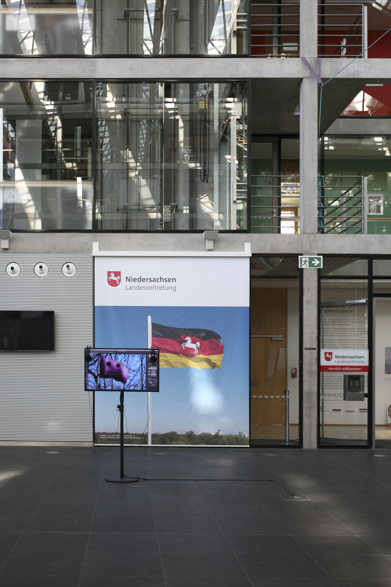

Angels Tutorial
2018 · Single-channel video
Angels Tutorial is a single-channel video by Nickii Schamborski, 2018.



About the work
"Angels Tutorial" is a video artwork that subverts the familiar format of Photoshop tutorials to deliver a pointed critique of digital manipulation and nationalism. Through step-by-step demonstrations of erasing German flags from photographs, the work shows how easily national symbols and historical records can be altered in our digital age. By appropriating the tools and terminology of Photoshop, typically used to 'perfect' images, the piece questions the software's underlying attitudes to reality and truth. Usually associated with aesthetic retouching or technical instruction, the tutorial format becomes a form of political iconoclasm, challenging both the permanence of nationalist symbols and the software industry's role in shaping our relationship to images.
Zur Arbeit
Angels Tutorial ist ein Videokunstwerk, das das vertraute Format von Photoshop-Tutorials unterläuft, um eine pointierte Kritik an digitaler Manipulation und Nationalismus zu üben. Anhand von Schritt-für-Schritt-Demonstrationen zum Löschen von deutschen Flaggen aus Fotos zeigt das Werk, wie leicht nationale Symbole und historische Aufzeichnungen in unserem digitalen Zeitalter verändert werden können. Durch die Aneignung der Werkzeuge und der Terminologie von Photoshop, die üblicherweise zur Perfektionierung von Bildern verwendet werden, hinterfragt die Arbeit die der Software zugrunde liegende Einstellung zu Realität und Wahrheit. Normalerweise mit ästhetischen Retuschen oder technischen Anleitungen assoziiert, wird das Photoshop-Tutorial-Format zu einer Form politischen Ikonoklasmus.
Details
- Year
- 2018
- Type
- Single-channel video
- Specs
- HD, stereo sound, 28:24 min, English. Displayed on LCD-Monitor